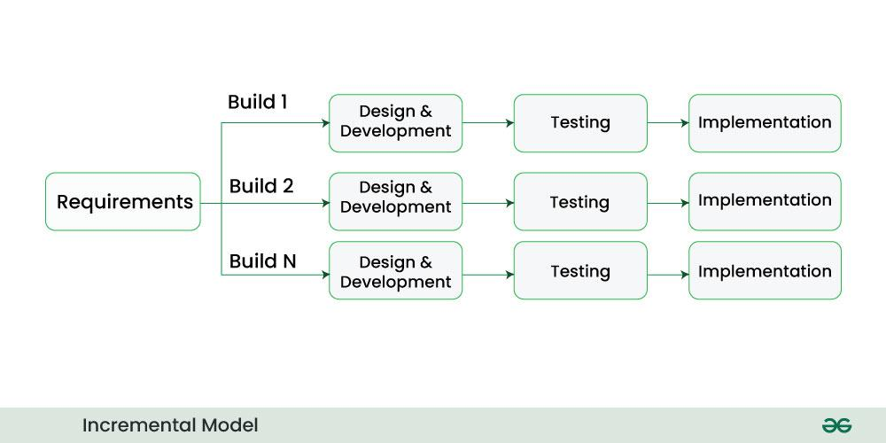

2.7 Iterative Enhancement Models
Iterative Enhancement is an approach to software development in which the system is built through a series of iterations, and each iteration adds new modules or improves existing ones on top of a pre-planned overall architecture. Unlike pure evolutionary models (§2.6), where structure and requirements may co-evolve unpredictably, iterative enhancement assumes that the team can define a stable architectural skeleton early and then fill it in over successive cycles — like completing the rooms of a house whose floor plan was already drawn.
Iterative Enhancement is a development philosophy, not always a single named diagram. The Incremental Process Model (§2.8) is the most common exam example of iterative enhancement in practice. Iterative Waterfall (§2.3) can also be used inside each iteration when the team needs controlled feedback within a single increment. The key exam phrase: “planned architecture + successive module additions.”

Why iterative enhancement exists
Classical Waterfall tries to build everything in one pass — risky when the system is large or when stakeholders need early proof that the direction is correct. Pure evolutionary development (Agile, evolutionary prototyping) allows architecture to emerge — powerful for uncertain domains but risky when the system must integrate with legacy databases, comply with standards, or scale to millions of users. Iterative Enhancement sits in the middle ground: plan the structure once, then grow the product in controlled steps so that each iteration delivers value without redesigning the foundation every month.
Core principles
- Architecture first. Before the first iteration, architects define modules, interfaces, data models, and integration points. Later iterations must fit this skeleton unless a formal change request authorises structural revision.
- Each iteration extends the same codebase. New modules plug into existing interfaces; the team does not throw away the previous iteration and start from scratch (contrast throwaway prototyping, §2.4).
- Requirements are mostly known but may be refined. The broad feature set is planned early; details within each module can be clarified during the iteration that implements that module.
- Integration and regression testing every cycle. Because each iteration builds on prior work, the team must verify that new code does not break old modules — configuration management and automated tests are essential.
- Partial delivery is possible. When combined with the Incremental model, users may receive working subsets early; when used internally (e.g., alpha builds), stakeholders still see progress before the full product is finished.
Process — how an iterative enhancement project unfolds
- Initial planning and architecture. The team produces a high-level requirements overview, system architecture document, module breakdown, and interface specifications. Risk analysis identifies which modules are critical path or technically risky.
- Prioritise modules for iteration 1. Choose the smallest set that forms a coherent, testable subset — often core data handling, authentication, or the most essential business workflow.
- Iteration 1 — develop, integrate, test, deliver. Run requirements → design → code → test for the chosen modules; integrate with any stubs for future modules; deliver to users or internal testers if the Incremental delivery pattern is used.
- Review and refine plan. Feedback from iteration 1 may adjust details of later modules but should not casually rewrite the whole architecture. Major structural changes go through change control.
- Iteration 2, 3, … n. Add the next planned modules, connect them via defined interfaces, run full regression on all prior modules, and optionally release another increment to customers.
- Final integration and acceptance. When all planned modules exist, perform system-wide testing, performance tuning, documentation, and formal acceptance against the original vision.
What happens inside one iteration
Each iteration is not “random coding” — it typically follows a mini-lifecycle (often a mini-Waterfall or Iterative Waterfall). Examiners expect you to name the activities:
- Requirements for this iteration — detailed specs for the modules in scope only.
- Design — module-level design that conforms to the global architecture (class diagrams, APIs, database tables).
- Implementation — coding with reuse of shared libraries and adherence to interface contracts.
- Unit and integration testing — test new modules alone and together with existing ones.
- Regression testing — re-run tests for all previously delivered modules to catch breakage.
- Release or internal demo — deploy increment or show working build to stakeholders.
Iterative Enhancement vs Evolutionary Development
This is the comparison most often asked in long questions. §2.6 covers evolutionary development in full; the table below is the exam-ready summary:
| Aspect | Iterative Enhancement | Evolutionary Development |
|---|---|---|
| Architecture | Planned upfront and kept as a stable skeleton; major changes need formal approval. | May emerge or change significantly across early versions; refactoring is expected. |
| Requirements | Mostly known at the start; refined per module during each iteration. | Often unclear initially; discovered and changed through user experience of each version. |
| Goal of each iteration | Implement the next planned part of a known structure. | Learn from users and adapt the product — structure and features may shift. |
| Planning horizon | Detailed plan for the whole system architecture; detailed requirements per iteration. | Roadmap is high-level; detailed planning mainly for the next version or sprint. |
| Examples | Incremental model (§2.8); structured multi-release projects with fixed platforms. | Evolutionary prototyping (§2.4), Spiral (§2.5), Agile (§2.11). |
| Architecture risk | Lower — structure is fixed early, so integration paths are clearer. | Higher — “big ball of mud” if refactoring is neglected between versions. |
| Requirements risk | Higher if upfront requirements were wrong — harder to pivot than in Agile. | Lower — change is built into the process from the start. |
| Metaphor | Filling in rooms of a house already designed on paper. | Growing an organism that changes shape as it matures. |
Iterative Enhancement vs Iterative Waterfall (§2.3)
| Aspect | Iterative Enhancement | Iterative Waterfall |
|---|---|---|
| Primary goal | Build the full system in planned stages, adding modules each iteration. | Build one complete product through one pass of phases, looping back only to fix errors. |
| Customer delivery | May deliver partial working software after each iteration (especially with Incremental model). | Customer usually receives the full product only at the end. |
| Feedback loops | Forward progress through planned increments; feedback refines future modules. | Backward loops fix defects in earlier phases of the same release. |
| Architecture | Explicitly planned for all future iterations from the start. | Designed once for the whole system; loops do not imply multiple customer releases. |
Iterative Enhancement vs Incremental Model (§2.8)
Important exam distinction: Iterative Enhancement is the concept (planned architecture, successive module additions). The Incremental Process Model is a specific SDLC model that implements iterative enhancement by delivering each chunk through a mini-Waterfall to the customer. Not every iterative enhancement project must ship to customers every iteration — internal alpha builds still follow the philosophy. Every Incremental model project is iterative enhancement; not every iterative enhancement project uses the full Incremental delivery pattern.
Architecture and interface planning (critical success factor)
Because later iterations depend on decisions made early, the team must invest in:
- Modular decomposition — clear boundaries so iteration 3 does not require rewriting iteration 1.
- Stable APIs and data schemas — version interfaces if change is unavoidable; avoid breaking existing modules.
- Extension points — hooks for features planned in later iterations (plugin slots, configurable workflows).
- Shared infrastructure early — authentication, logging, error handling, and database access layers in iteration 1.
- Traceability — map each module to requirements and test cases so regression is manageable.
Failure to plan interfaces is the main reason iterative enhancement projects collapse into expensive rework — effectively becoming evolutionary development with architectural chaos.
Step-by-step scenario
Scenario — University learning management system (LMS):
- Architects define modules: user accounts, course catalog, assignments, grading, notifications, analytics. Database schema and REST API conventions are fixed in month 1.
- Iteration 1: Login, roles (student/teacher/admin), course enrollment. Delivered to one pilot department.
- Iteration 2: Assignment upload and deadline tracking. Integrates with existing user and course modules; regression tests cover iteration 1.
- Iteration 3: Online quizzes and auto-grading. Uses same user and course APIs; no change to core schema except one new table planned in the original design.
- Iteration 4: Email/SMS notifications and grade export. Pilot feedback adjusts notification templates but not the overall architecture.
- Full university rollout after acceptance testing across all modules.
If the team had skipped upfront API design, iteration 3 might have forced a rewrite of the course module — the hallmark of failed iterative enhancement.
Advantages of Iterative Enhancement
- Controlled growth on a stable base — avoids both Waterfall’s big-bang risk and evolutionary models’ architectural drift when discipline is applied.
- Early partial functionality — when paired with Incremental delivery, users gain value before the full system exists.
- Easier integration than ad-hoc evolution — interfaces defined upfront reduce surprises when modules meet.
- Manageable team focus — each iteration has a clear scope (specific modules), improving estimates and morale.
- Progress visibility — sponsors see working software grow iteration by iteration instead of waiting years.
- Supports parallel work — independent modules in different iterations can sometimes be built by separate teams once interfaces are frozen.
- Regression catches defects early — testing after every iteration prevents a pile-up of integration bugs at the end.
Disadvantages and limitations
- Upfront architecture must be good — wrong early decisions propagate through every iteration; fixing them later is expensive (contrast Agile, where refactoring is routine).
- Not ideal for highly uncertain requirements — if the team cannot predict major features, evolutionary or prototype approaches fit better.
- Integration overhead — each iteration must merge with all prior modules; without automation, cost grows.
- Total cost may exceed single-pass Waterfall — repeated testing, documentation per iteration, and release activities add expense.
- “Iteration” can be confused with “fix bugs” — exam answers must clarify that iterations add planned capability, unlike Iterative Waterfall loops that mainly correct earlier-phase errors.
- Customer expectations — early increments may look “unfinished”; stakeholders must understand the roadmap.
When to use Iterative Enhancement
- Large systems where the overall structure is understandable early but full implementation takes too long for one pass.
- Projects needing early partial delivery without abandoning architectural discipline (Incremental model).
- Products that must integrate with fixed external systems (legacy ERP, payment gateways, government APIs).
- Organisations that want more flexibility than Waterfall but more structure than pure Agile.
- Multi-team development where interface contracts allow parallel module construction.
When NOT to use
- Requirements are unknown or volatile — use evolutionary prototyping, Spiral, or Agile (§2.4, §2.5, §2.11).
- Small projects completable in one short cycle — overhead of multiple iterations is unnecessary.
- No skill to design scalable architecture upfront — the model will fail without a solid skeleton.
- Regulatory need for single documented baseline with no partial releases — classical or V-Model Waterfall may be required.
Real-world example
Example — E-commerce platform rebuild: A retailer replaces a monolithic PHP shop with a microservices architecture. Architects define services for catalog, cart, checkout, inventory, and shipping in quarter 1. Iteration 1 launches catalog browsing and search (read-only, no checkout). Iteration 2 adds cart and guest checkout. Iteration 3 integrates payment and inventory reservation. Iteration 4 adds loyalty points and recommendations. Each release is production-quality on the same platform; the service boundaries chosen in quarter 1 never change. This is iterative enhancement implemented through an Incremental delivery plan.
Q: Explain the Iterative Enhancement approach to software development. How does it differ from Evolutionary Development models and from the Iterative Waterfall model? Describe the typical process, advantages, disadvantages, and suitable application areas. Illustrate with an example.
Model answer outline:
- Define Iterative Enhancement as building software in iterations on a pre-planned architecture, where each cycle adds or improves modules while preserving the structural design.
- State that it is a philosophy exemplified by the Incremental model (§2.8), distinct from evolutionary approaches where architecture and requirements co-evolve.
- Explain core principles: architecture first, extend same codebase, mostly known requirements, integration and regression each iteration.
- Describe the process: plan architecture → prioritise modules → develop/test/deliver iteration 1 → repeat until complete → final acceptance.
- Contrast with Evolutionary Development using a table (architecture, requirements, goal of iteration, examples, risk).
- Contrast with Iterative Waterfall: enhancement adds planned modules across releases; Iterative Waterfall loops back to fix errors within one product cycle.
- Clarify relationship to Incremental model: Incremental is a specific delivery pattern that implements iterative enhancement.
- Discuss architecture planning (modules, APIs, extension points) as critical success factor.
- Walk through an example (e.g., LMS or e-commerce) showing iterations adding modules on a fixed skeleton.
- List advantages (controlled growth, early value, integration clarity) and disadvantages (bad upfront architecture, integration cost, not for volatile requirements).
- State when to use and when to prefer other models.
MCQ (GFG style): Iterative Enhancement differs from Evolutionary Development mainly because — (B) Architecture is planned upfront and kept stable.
MCQ: Which model best exemplifies Iterative Enhancement in exams? — (C) Incremental Process Model.
MCQ: In Iterative Enhancement, each iteration primarily — (A) Adds planned modules to an existing structure.